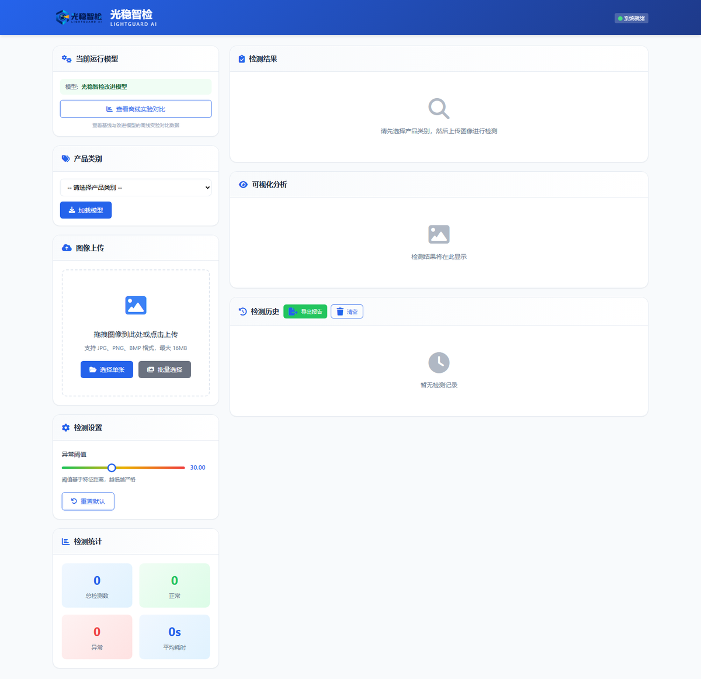

光照域偏移
亮度、局部阴影和色温变化可能改变正常区域的特征分布。
iCAN 大学生创新创业大赛 · 高校组软件赛道
面向亮度变化、局部阴影、反光与色温漂移，研究正常样本的光照鲁棒特征记忆，并提供异常判别、像素级热力图、批量检测与结果导出。

01 · WHY
固定光照数据与真实生产环境之间存在域偏移。正常产品在亮度、阴影、反光发生变化时，局部特征可能偏离训练记忆库，从而产生误报。
亮度、局部阴影和色温变化可能改变正常区域的特征分布。
采用只依赖正常训练图像的异常检测路线，降低对缺陷标注的依赖。
除了正常/异常结论，还需用像素级热力图提示可疑区域。
02 · HOW
项目基于公开 PatchCore 方法开展研究，重点验证可控光照增强、固定容量记忆库对照与逐光照条件评测。
原图与可控光照变体
WideResNet-50 局部表征
Coreset 采样与公平对照
异常分数、热力图与导出
统一特征层、评分方式和最终记忆库容量，区分光照覆盖收益与单纯增加特征数量。
按类别和光照条件报告结果，同时展示提升类别与退化类别。
当前定位为离线验证原型，现场部署仍需企业数据、阈值校准和可靠性验证。
03 · WORKING DEMO
以下截图来自本地可运行程序的真实操作过程。点击图片可放大查看。
页面显示异常分数、类别阈值、判定状态和检测耗时，并提供原图、热力图和叠加图。
04 · EVIDENCE
以下为团队本地实验记录。不同实验轮次不拼接计算，AUROC 不直接等同于生产线准确率。
+3.11 pp｜5类提高、3类下降
60.14% → 72.08%
55.87% → 42.43%
739.56 s → 7.74 s，单次比值约95.5倍。
仅对应该类别与该次运行，不代表全部类别或端到端部署。Image AUROC 88.13%｜Pixel AUROC 92.43%｜AUPRO 73.72%
该轮记录不能与六类配对基线直接作差。TEAM
计算机与软件学院｜iCAN 大学生创新创业大赛 AI 应用创新挑战赛